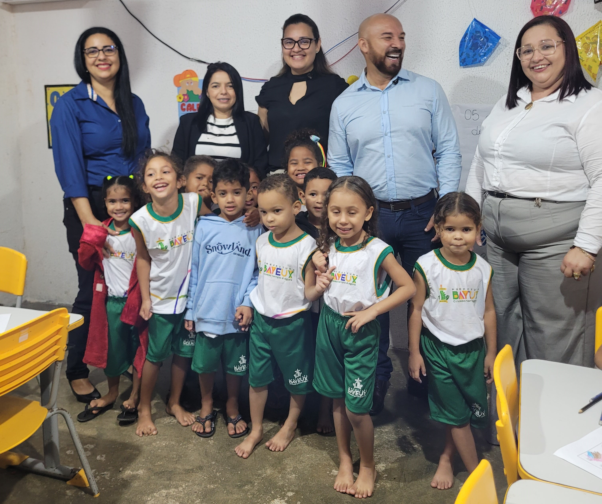
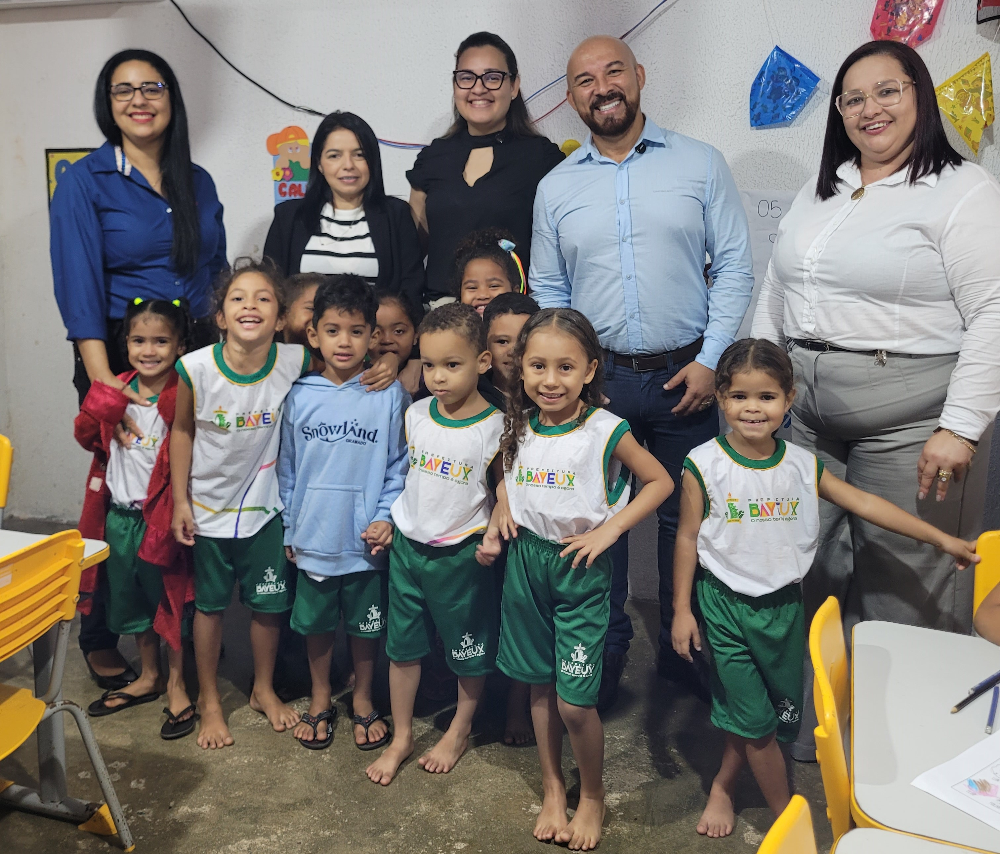
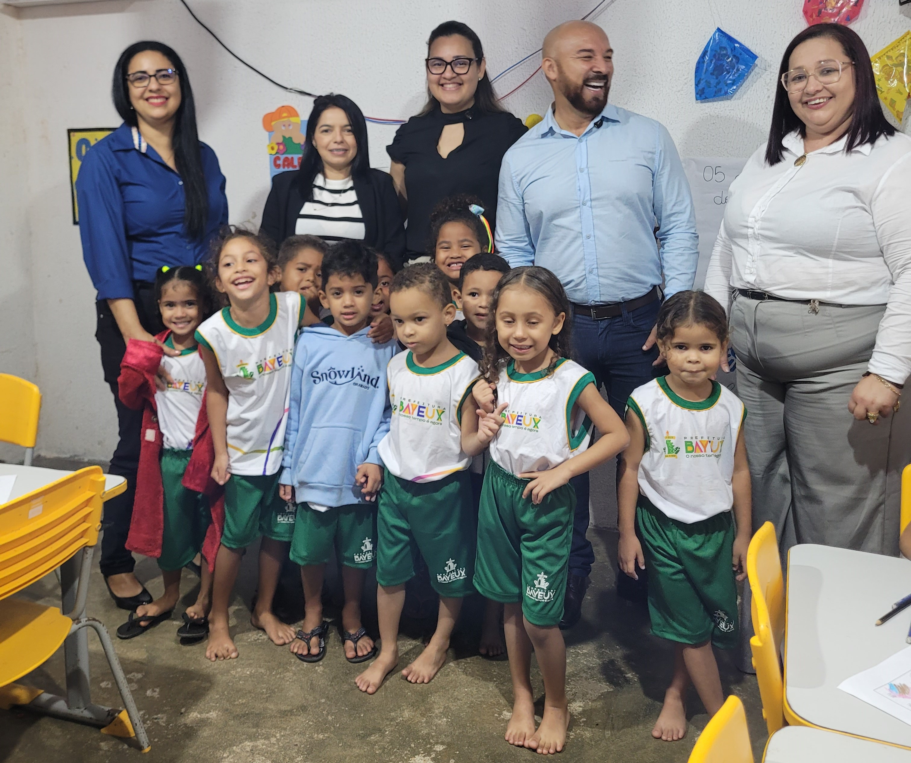
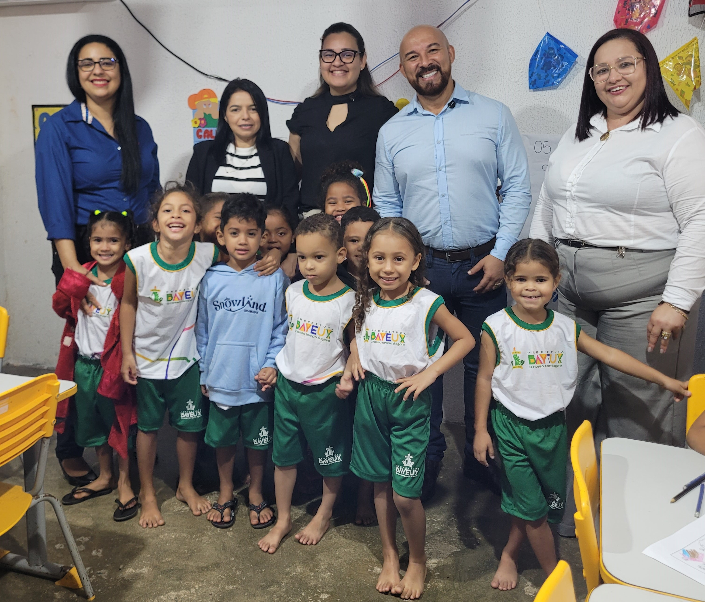

04 Setembro 2025
Entrega de Fardamentos nas Escolas de Bayeux - PB
Com grande alegria, a Prefeitura Municipal de Bayeux, por meio da Secretaria Municipal de Educação, tem o prazer de anunciar a entrega dos fardamentos escolares para todos os alunos da rede municipal. Pela primeira vez na história do município, entregamos dois fardamentos por aluno, garantindo que cada estudante tenha o conforto e a dignidade de um uniforme novo para o seu dia a dia escolar.
 




Essa conquista é um reflexo do nosso compromisso com a qualidade educacional e com o bem-estar de nossos alunos, que agora terão a oportunidade de se vestir com uniformes completos e adequados, promovendo igualdade e pertencimento dentro das nossas escolas.
Estamos muito felizes com essa realização histórica e seguimos trabalhando para proporcionar a todos os estudantes de Bayeux as melhores condições de aprendizado e crescimento.